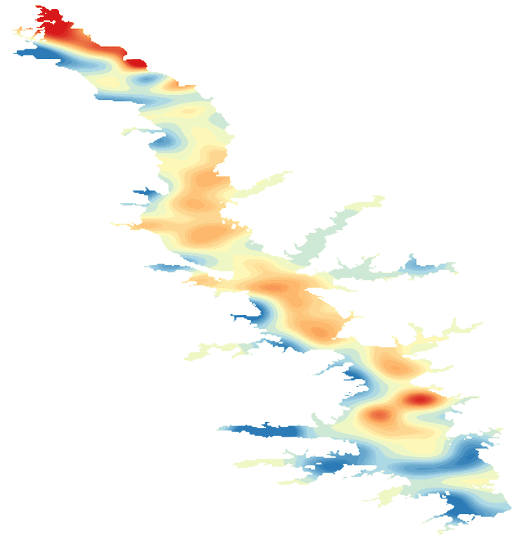

LakeScope › TX
Toledo Bend Reservoir today
Updated 2026-11-14 - Atlas Labs
Clear water, 67°F water, level steady, near normal, calm this morning.
Water level
167.60 ft
USGS gauge 08025350 - 2026-11-14
7-day trend: steady (-0.14 ft). Compared with normal for this date: -0.0 ft (same weeks, 2016-2025).
Water clarity and algae
Clear water Last clear view: yesterday.
Surface temperature
67°F
seen from space on 2026-11-11

Weather, next 3 days
| Day | Sky | High / low | Wind | Rain |
|---|---|---|---|---|
| Saturday | Sunny | 60 / 49°F | 10 mph E | 0% |
| Sunday | Rain Showers | 53 / 48°F | 15 mph E | 85% |
| Monday | Chance Rain Showers then Mostly Sunny | 57 / 47°F | 10 mph NE | 31% |
Sunrise 06:41 - sunset 17:16 - Waxing crescent. National Weather Service.
Get the LakeScope app: alerts and the 3-D view of Toledo Bend Reservoir